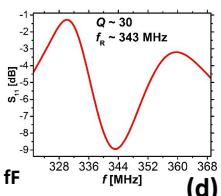
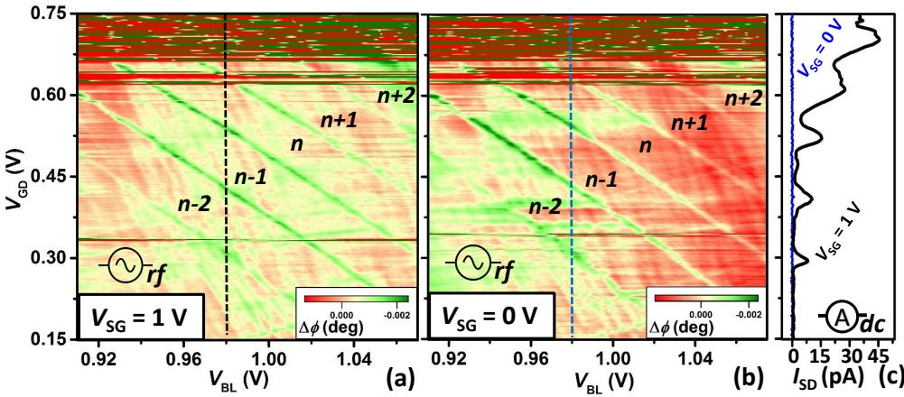
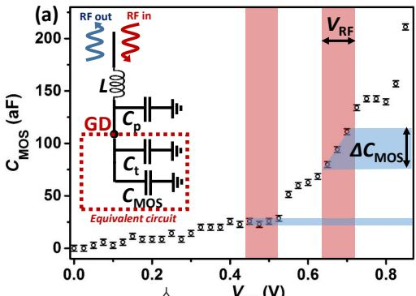
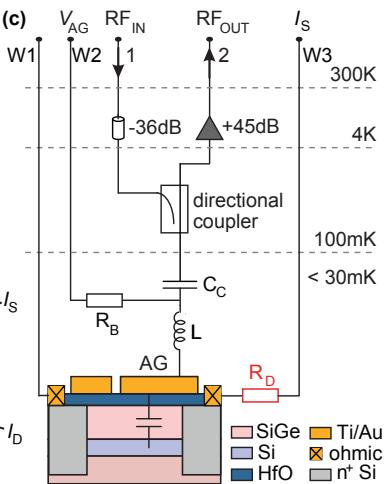
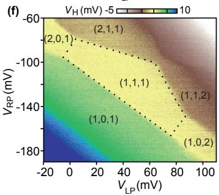
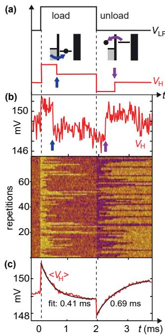

物理图像
在传统的QPC 电荷传感器方案中，被测量子点旁边还要再摆一条被外加偏压调到夹断区的窄通道，多一个耗电极、一组引线和一片二维电子气（2DEG）面积，对量子点阵列扩展并不友好。栅极射频传感（gate-based sensing，文献中也写作 RF-DGS、dispersive gate sensor 或 gate sensor）的思路是直接利用被测量子点本身的栅极做探测：原本用于施加直流偏置的栅极被接到一个贴片电感 与寄生电容 组成的谐振电路（储能电路，tank circuit），栅–点之间的耦合电容 把栅极上的射频电压耦合到量子点，等价于在栅极端口看进去的复导纳（complex admittance） 随量子点电荷态改变。当量子点电子数 发生一次跳变，量子电容 或隧穿电容 改变， 跟着偏移，谐振谷的频率、深度与相位一起变；外加门电压扫描时，可直接画出电荷稳定图的蜂窝线。
这种读出属于色散读出家族：射频载波频率 远高于单电子隧穿速率 ，腔内没有实光子被吸收或发射，量子点状态变化只通过相移与频移反映到谐振电路响应上。由于被测信号本身就是栅极看到的复导纳（含量子电容和隧穿电容），该方法常被归为”电容感应”（capacitive sensing）一类，与射频反射测量词条中”电阻感应 vs 电容感应”的二分对应。
复导纳的两部分来源
栅极端口看到的复导纳 包含两类相互独立的物理机制，分别对谐振电路的耗散与色散做出贡献：
- 隧穿电容 与电导 ——载流子在量子点和电子库之间的隧穿。固定栅压、改变失谐 越过一条 charge transition 线时，量子点–储库之间发生一次电荷交换；等效电导随 的响应可由费米黄金定则给出。隧穿电容在隧穿频率 之上趋于零、在 之下保持有限峰值 量级，因此”隧穿耗散”贡献谐振电路的线宽；
- 量子电容 ——双量子点能级对栅压的曲率 。在 charge transition 线附近的两个简并电荷态之间，电子可瞬时在两侧分布，等效电容增加
形式上正比于态密度（density of states）。量子电容贡献谐振电路的频率偏移，且改变方向随栅压跨越 transition 线而翻转；偏离 transition 时 指数压低，恢复为纯几何电容 。
把两部分叠加，栅极端口总电容可写为
总电导
隧穿电导的强弱由隧穿率 与温度比较决定： 时隧穿电容趋于零、电导饱和； 时隧穿电容峰值 、电导指数压低。两者共同决定了谐振电路的”反射谱指纹”：扫栅压时谐振谷在 transition 线两侧左右移动（量子电容），同时谷深按隧穿电导 出现尖锐的 dip 结构。
等效电路与谐振方程
把栅极端口的复导纳代入反射电路，谐振条件 的偏移直接给出量子电容 ；而反射系数幅值 的变化给出电导 。当载波频率 落在谐振谷附近时，反射信号
其中
是 L 与 并联后的等效阻抗。在低电导极限 下，量子电容改变只表现为相位相位的偏转，相位响应近似线性
其中 是有载品质因子；在 transition 线两侧 改变符号，因此 也改变符号——扫栅压得到的相位响应呈导数型锯齿线（dispersive lineshape），这正是色散读出的特征指纹，与QPC 直流输运或 QPC modulation 的台阶型信号互为对照。
量子电容的微观推导
把量子点看成一组能级 上的 电子系统，化学势
栅压通过杠杆臂 改变 。温度 下电子平均占据数
对栅压求导给出
其中 是电荷数的涨落。量子电容因此可写为
过渡区 时 ，正好与隧穿电容的峰值一致——两者本质上是同一种电荷涨落的两个表达。一个电子隧穿引发的栅压位移 与量子电容的峰值乘积给出
因此栅压扫描中量子电容峰的半高宽直接反映电子温度 ——这是把栅极射频传感同时用作”温度计”的依据。
隧穿率与隧穿电导
在 transition 线上隧穿电导可写为
即 时 饱和， 时 指数压低。利用这一关系，可在 transition 线上读出隧穿率 。在多通道量子点（如双量子点）中
其中 、 为隧穿通道；transition 线的半高宽正好等于 。
推导梗概：射频反射读复导纳
第五章给出了利用反射式谐振腔测量近似孤立量子点复导纳的完整推导。把电容耦合的半波长反射式谐振腔等效为串联 LC，电容
（在 、、 下），电感
量子点本身等效为并联的 电路，复导纳
幅值衰减与量子点电阻相关：
相位偏移与电容相关：
在石墨烯双量子点上，triple point 处 对应 ——量子点几乎是孤立的；而穿过 的 transition 线时相位变化 ，对应
比典型石墨烯几何电容还小两个量级，体现”近似孤立”结构的电容非常微弱。代入非相干极限 与不透明极限 下的等效电阻、电容公式，由 、 反推隧穿率
与电荷稳定图上的过渡线半高宽直接一致。
为什么适合扩展
栅极射频传感相比QPC 电荷传感有三个直接好处，也是它成为量子点阵列主流读出方案之一的根本原因：
- 省一条传感通道：被测量子点本身的 plunger/barrier 电极同时用作传感端口，不需要额外铺设 QPC 通道及其偏置线；一个被测点只占一根电极+一根源漏，节省芯片面积与栅极布线密度。
- 不引入额外电荷噪声源：QPC 通道的电流涨落会通过电容耦合成为被测点的电荷噪声；栅极射频传感只读取栅–点之间已有的耦合电容，不引入新通道。
代价主要有三：
- 灵敏区域窄：栅极端口只在 transition 线附近才有可观信号（ 与 都集中在 transition 上），工作点必须落在 transition 线附近，偏离则信号指数衰减。这与 QPC 在最灵敏工作点 处一段宽区间可用形成对比。
- 控制线与射频线必须共存：同一根电极既要做直流偏置又要做射频载波，需要 bias tee 把两路分开；T 型偏置器、扼流电感与隔直电容是 PCB 板上必须的额外元件，且直流与射频之间的串扰必须抑制。
- 寄生电容与电路阻抗匹配更敏感：谐振电路等效 越小信号越弱；栅极端口的 比 QPC 端口更难调，因为电极面积、键合线、PCB 走线都贡献寄生。 模拟给出：在砷化镓样品上 时 给出最灵敏匹配点 ；石墨烯因 –（个别 ）导致 必须降到 –、谐振谷深度只有数 dB。
增强型器件的难题：栅极射频泄漏
耗尽型器件（如GaAs/AlGaAs）中射频信号经欧姆接触的低阻通道直达栅极下的 2DEG，载波几乎全部到达传感位置；但累积型/增强型器件（Si-MOS、Si/SiGe）中，2DEG 与引线栅极之间存在大面积电容耦合 —— 对 – 载波其电抗只有数 k，远小于栅极端口的等效电阻 ，载波大部经 旁路泄漏到地，。增强型器件因此成为栅极射频传感能否实用的关键考题。
欧姆方法：缩短离子注入区
最直接的方案是把 n++ 离子注入区拉到距 SET 中心约 、缩短引线栅极长度、减小 。这要求微纳工艺精度更高，在 Si-MOS 中容易出现栅极漏电，难以普遍推广。
劈裂栅（split-gate）方法
给出一种与栅极射频传感天然结合的”劈裂栅极”方案：把原本的单层引线栅极拆为累积栅极与引线栅极两层，二者通过一个约 的小接触区相连：
- 射频信号接到累积栅极—— 不再是泄漏通道，而是传感通道；
- 引线栅极在射频测量时保持关断——既阻止 2DEG 累积，也切断载波向 DAC 的回流 ；
- 增加 ——累积栅与引线栅之间的二维电子气电阻远大于 （仿真显示 才能有效抑制泄漏）。
模拟显示：在 – 宽范围内 都不再决定谐振深度，因此离子注入区可以远离 SET 中心 仍实现匹配。配合匹配电容 （把过耦合状态拉回匹配点）与调谐电容 ，实测在 下 在库仑峰两侧变化可达 ，积分时间 、RTS 频率 、信噪比 、电荷读出保真度 、带宽 。
积累型栅传感器的硅实证（Rossi 2017）
上文”增强型器件射频泄漏”的难题在硅中的第一个系统实证与化解来自 Rossi 等人 2017 年的工作：他们在硅 MOS 器件上用积累型栅传感器（accumulation-mode gate sensor）实现了量子点的色散读出。器件中探测栅 GD 嵌入由贴片电感 与寄生电容 组成的储能电路，谐振频率 、品质因子 ，反射测量在 用零拍探测完成（低温与室温两级放大），实验在约 的无液氦稀释制冷机中进行。

积累型栅传感器器件与测量链路：(a) 器件 SEM 图与测量设置，蓝色为嵌入谐振电路的栅电极，红圈标出量子点形成区域；(b)(c) 分别为探测栅工作在阈值电压以下与以上时的示意——阈值以下只有孤立电子代表量子点，阈值以上栅下形成积累层；(d) 实验所用谐振器的特征频率响应。图源：Rossi et al., APL (2017)，Fig. 1。
该工作给出的相位响应公式是栅极射频传感定量分析的标准出发点：
其中 是反射信号相移、 是谐振器品质因子、 是系统总电容变化、 是寄生电容。电子隧穿产生的额外电容贡献即隧穿电容
其中 是探测栅的杠杆臂（该器件 ）、 是量子点平均电荷。杠杆臂越大读出灵敏度越高：FinFET 器件凭借 超薄高介电常数栅介质把 做到 ，灵敏度高达 。这两个公式与本词条上文从复导纳出发的推导（量子电容 、隧穿电导）同源—— 正是电荷涨落 的另一种写法。

硅量子点的色散电荷稳定图：(a) 相位响应随势垒栅 （纵轴）与探测栅 （横轴）的变化，标注了量子点电荷占据数；(b) 关断筛选栅（）后同一区域只剩孤立量子点的蜂窝图；(c) 两种构型下源漏直流电流的对照，验证射频相位信号与直流输运给出一致的库仑峰位置。图源：Rossi et al., APL (2017)，Fig. 2。
器件设计上，该工作还给出把”泄漏通道”转化为”传感通道”的量化方法：直接测量 MOS 电容 随 的变化，选出既不把电子加热出量子点、又能产生可分辨 的射频驱动幅度（峰值射频幅度与有效 变化在图中分别以阴影标出），并把栅探测器等效为与谐振电路串联的电路元件参与匹配设计。栅极同时工作在阈值以下（读出孤立量子点）与以上（形成积累层做欧姆接触）两种模式的能力，正是Si-MOS线性量子点阵列做栅极读出的工艺基础。

MOS 电容法设计射频工作点：(a) 随 的测量（误差棒为测量分辨率），红色阴影为峰-峰射频幅度、蓝色阴影为参与信号的有效 ，插图为栅探测器与谐振电路串联的等效电路；(b)(c) 线性积累型量子点阵列的顶视图与剖面图，展示耗尽栅在点栅下方的走线（宽 、长 ）。图源：Rossi et al., APL (2017)，Fig. 4。
积累栅电导传感：对高阻 2DEG 兼容的接法
未掺杂 Si/SiGe 器件给栅极射频传感出了一道新题：2DEG 电阻率高（传感点势垒到键合 pad 估计有 20 kΩ，含欧姆接触与 2DEG 有限电阻率），GaAs 式”传感点欧姆接反射仪”行不通；纯色散栅传感又只能测电容、带宽有限。Volk 等人 2019 年的接法把两者接通：谐振电感焊线接到传感点的积累栅 AG，构成 136 MHz 的 L–AG 谐振；同时用一个解耦电阻 把传感点的欧姆接触与样品板射频地断开——射频载波经 电容耦合进沟道后无路可泄，只能流经传感点电导，反射信号因此对传感点电导（而非仅量子电容）敏感，恢复了对电荷（而不只是电容）的快速感知。

积累栅反射仪电路：RF 载波（端口 1）激发 L–AG 谐振；积累栅工作电压经 R_B–C_C bias tee 加入，谐振的 RF 电压经电容耦合到硅沟道，沟道经解耦电阻 R_D 与低通滤波的低温线 W3 隔离——反射响应由传感点电导调制，定向耦合器 + 室温零拍混频（端口 2）读出。图源：Volk et al. (2019), Fig. 1(c)。
工作性能：谐振频率不随传感点调节漂移（容性/感性贡献不变），谐振处反射功率随库仑峰变化 12 dB（传感点电流同时变化 170 pA）；用 2 kHz 锯齿脉冲 + 逐行步进，1 s 内即可采完高分辨双点/三点电荷稳定图（直流输运需数分钟），降分辨率可到视频速率——支持”实时调点”。单发层面：对 0–1 电荷跃迁做方波脉冲，台阶 2.0 mV、噪声 0.42 mV，24 μs 积分下
外推 （SNR=1），实测最短 2.4 μs 单发轨迹；三能级脉冲（Elzerman 式）配合阈值判别或小波边沿检测即得单发自旋读出，1000 次平均中的”自旋鼓包”给出隧穿率统计。该技术还提供了一个免费的应用：正反向脉冲三角的非对称性直接判读点间自旋弛豫——逆时针轨迹在 区出现脉冲三角，说明泡利阻塞的 弛豫超过 5 μs，而顺时针方向无反向三角，说明反向弛豫远快于此。

RF 积累栅传感的三点电荷稳定图（V_H 经平面拟合扣除背景）：左/右 plunger 电压平面上清晰分辨 (1,1,1) 等电荷区，虚线标出三点各占单电子的区域——单栅层、未掺杂 Si/SiGe、与脉冲栅操作兼容。图源：Volk et al. (2019), Fig. 2(f)。

单发电荷与自旋读出：(a)(b)(c) 方波脉冲跨越 0–1 跃迁，单发轨迹中逐电子进出点的台阶清晰可辨（80 次重复），200 条平均的指数拟合给出隧入/隧出时间 0.41/0.69 ms；(d)(e)(f) 三能级脉冲的单发自旋读出——自旋上电子在读出段的”先出后进”隧穿事件（箭头），1000 次平均的插图显示自旋鼓包。图源：Volk et al. (2019), Fig. 4。
可变电容扩展谐振频率
由于栅极端口的 强烈依赖样品几何， 在砷化镓栅极探测器上引入一个变容二极管 （varactor），用偏置电压 调节，使谐振频率
连续可调，从而针对不同样品的寄生电容实时匹配。实验装置中电感 ，变容二极管远离样品放置。这是栅极射频传感相比固定电感的方案的一大灵活点。
与其他概念的关系
栅极射频传感把”读出”与”控制”合并到同一根电极，本质上是射频反射测量的一种接法——负载端的等效 RLC 电路完全一样，只是阻抗来源不是 QPC/SET 的源漏电阻，而是栅–点耦合电容 上看到的复导纳。理解这一点可用同一条反射系数—谐振电路—阻抗匹配链路，相关细节参见射频反射测量词条：
- 反射系数 、储能电路谐振 、匹配电阻 等公式直接复用；
- 偏置三通（T 型偏置器）让直流偏置和射频载波共用同一根电极；
- 载波频率被抬高到 –，避开低频 $1/f$ 噪声区；
- 灵敏度公式 与射频 QPC 共用，但 仍是杠杆臂。
栅极射频传感与色散读出共享物理图像——色散频移 与量子电容改变频率 在数学上同构：两者都是把量子点参数（能级、占据数）的变化映射为谐振腔（或谐振电路）的频率/相位响应。区别仅在 微波谐振腔与 L-C 储能电路的实现层级不同：栅极射频传感工作在百 MHz 量级、色散腔读出工作在 GHz 量级，物理上分别对应集总参数与分布式参数。
栅极射频传感直接读取的是 charge transition 线的位置与形状，因此与库仑阻塞、电荷稳定图天然耦合——扫两路栅压即可在 transition 网格上画出二维相图，且因为信号是色散的锯齿线，相图对比度比QPC 直流输运或 modulation 都要高。
在Si-MOS / Si/SiGe 这类增强型器件中，栅极射频传感与射频反射读出都面临同一个泄漏难题，但栅极方案因为载波直接经过 ，反而比”经欧姆接触”方案更宽容——劈裂栅方法（见上文）即把泄漏变为耦合，从而在工艺宽松的条件下也能实现 的读出保真度。
最后，栅极射频传感的”宽频带+可调谐”特性使其与单发读出、读出串扰、量子点阵列扩展直接挂钩：MHz–百 MHz 带宽足以追踪微秒级单电子隧穿；多频点储能电路可在一根总线上做波分复用。
参数与量级
| 量 | 典型值 | 来源 |
|---|---|---|
| 硅积累型栅传感器谐振参数 | 、、、（ 零拍读出） | Rossi 2017 |
| 杠杆臂 （栅传感器） | 硅 MOS 约 ；FinFET（ 高 k 介质） | Rossi 2017 |
| 电荷灵敏度（FinFET 栅读出） | Rossi 2017 | |
| 谐振频率 | GaAs ；石墨烯 | , 49 |
| 贴片电感 | GaAs ；石墨烯 ；栅极探测 （加变容二极管） | , 46, 49 |
| 片上寄生电容 | GaAs –；石墨烯 –（个别 ） | |
| 探测带宽 | GaAs RF-DGS 约 （He3 平台 ） | |
| 灵敏匹配电阻 | GaAs 、 时约 | |
| 电荷灵敏度（栅极反射式） | 量级（与 RF-QPC 同阶） | |
| 量子电容峰值 | ， 时约 | 推导见正文 |
| 隧穿电容半高宽 | （非相干极限）/（不透明极限） | 推导见正文 |
| 读出保真度 | Si-MOS 劈裂栅 ，积分 | |
| 带宽 | Si-MOS 劈裂栅 （） | , 135 |
| 等效电阻（孤立石墨烯点） | ， | |
| 反推隧穿率 | （由 、） | |
| 积累栅电导传感（Si/SiGe） | L–AG 谐振 136 MHz + R_D 解耦；谐振处反射变化 12 dB；1 s 采完高分辨稳定图 | Volk 2019 |
| 单发积分时间/电荷灵敏度 | 24 μs 下 SNR=3.4；最短 2.4 μs；、 | Volk 2019 |
| 传感点–pad 电阻 | 约 20 kΩ（含欧姆接触与 2DEG 电阻率，需 R_D 解耦） | Volk 2019 |
| PSB 点间自旋弛豫判读 | 弛豫 >5 μs（脉冲三角非对称） | Volk 2019 |
实验特征与标定流程
- 找谐振：不接解调链路，用网络分析仪扫 ，调电极电压观察谐振谷位置与深度，确定 与最佳匹配工作点。变容二极管电压 用作粗调，plunger 直流偏置用作微调。
- 锁定 transition 线：扫描 plunger 栅压时观察相位响应 ，transition 线两侧 改变符号并呈锯齿线，是色散信号的指纹。沿两条 transition 线的交叉点（triple point）扫两路栅压即可画电荷稳定图。
- 零拍解调：反射信号经低温放大（4 K 冷盘 HEMT 约 ，如 0.1–2 GHz 带宽的 AmpliTech APTC3-00100200-0900-D4）与室温放大（约 ，Miteq AM-1309）后与同频本振混频，由低通滤波器取出基带 。IQ 混频可同时取出同相与正交分量。
- 边带标定：在栅极上叠加已知幅度（如 、）的正弦调制，用频谱仪读载波两侧边带的信噪比，代入灵敏度公式；以 处频宽作为探测带宽。
- 温度计用法：量子电容峰 的半高宽直接给出电子温度 ，与电荷噪声评估互补。
栅极射频传感的另一典型应用是”快速测量”——结合示波器高速采集，把三角波（典型 、）叠加在 plunger 上，可在数分钟而非数小时内画出二维相图，比传统锁相直流方案提速两个量级。该方法进一步配合频分复用可实现多通道并行读取：在每个量子点的栅极上叠加不同频率（典型 –）的三角波，由 IQ 解调分段滤波分开，一次扫描可得到多张相图。
局限与适用边界
- 增强型器件的射频泄漏：在 Si-MOS/Si/SiGe 中若不采用劈裂栅或短注入区，载波几乎全部经 旁路，；
- 灵敏区域窄：栅极端口只在 transition 线附近数百微伏范围内有显著信号，必须配合电荷稳定图精确定位工作点；
- 射频载波会缩短 ：持续驱动可视为 Sisyphus 耗散，二能级系统的纵向弛豫时间会被压缩；
- 控制/射频分离要求高：bias tee 的扼流电感与隔直电容、PCB 走线的寄生电感都会在频域引入额外谐振，需精细设计；
- 与温度与栅压耦合：量子电容峰高 给出温度计用途，但反过来工作点漂移与温度漂移都会移动信号位置，需定期标定。
参考文献
- Volk, C., Chatterjee, A., Ansaloni, F., Marcus, C. M., Kuemmeth, F. Fast Charge Sensing of Si/SiGe Quantum Dots via a High-Frequency Accumulation Gate. Nano Letters 19, 5628 (2019). DOI: 10.1021/acs.nanolett.9b02149；arXiv:1906.10584（QAtlas 缓存：1906.10584）。
- 栅极射频传感与强耦合读出的相关实验：Samkharadze et al., Science 359, 1123 (2018)。
完整文献库（含各篇站内全文页）见 参考文献库。